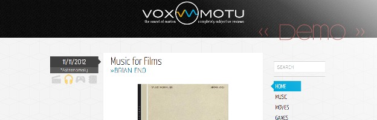

Vox Motu
WordPress is nice to have around if you want to make a quick site with minimal effort. However, as flexible as it may be, in order to get the exact end result you want, you have to build it from scratch. So when I decided I wanted to redesign my Vox Motu review blog, I also decided to code the entire CMS from scratch.
Vox Motu is currently in two pieces: the Backend and the Frontend. Now they just need to be meshed together. The frontend is structured with HTML/CSS and jQuery, whereas the backend is written in PHP and MySQL.